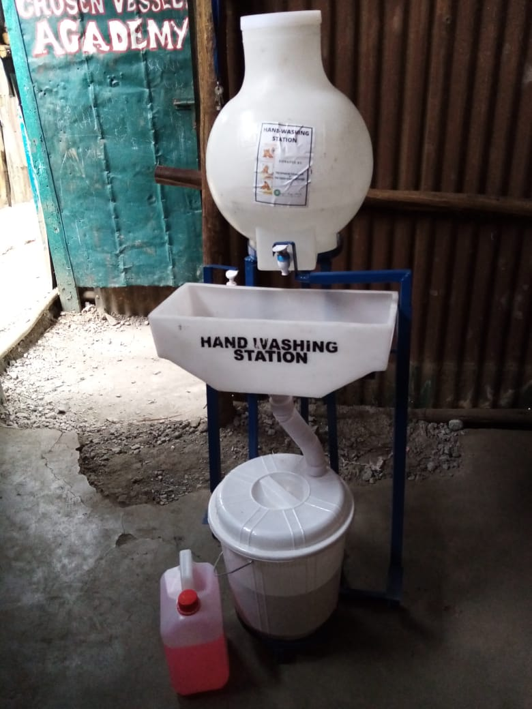
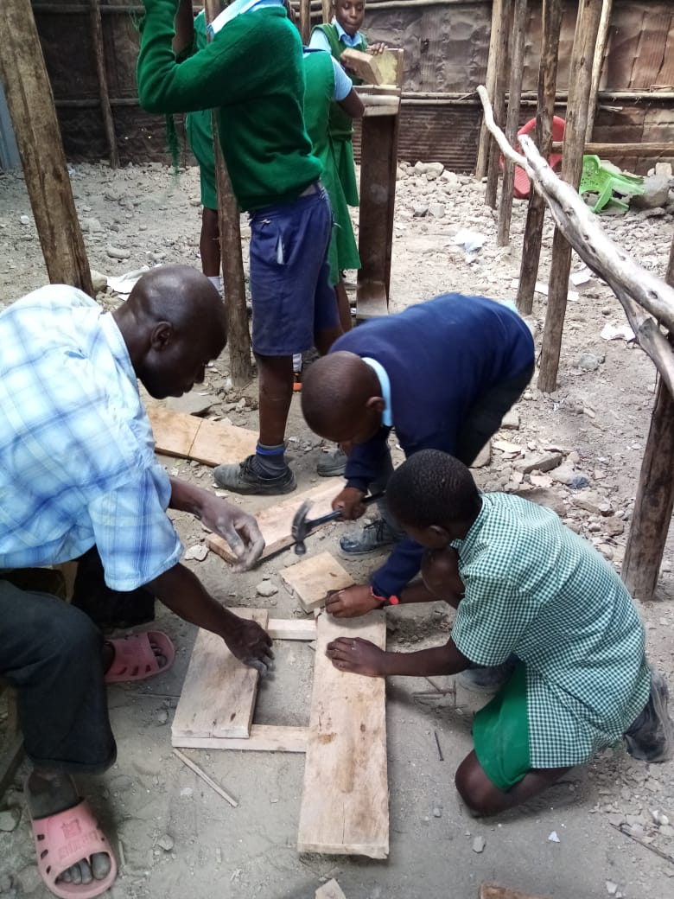

Zurück
Gib Corona keine Chance!
23-02-2021

Neues Schulmöbiliar
01-01-2021
Um mit viel Motivation in das neue Jahr zu starten, konnte die Organisation Material für einen ganzen Satz neuer Tische und Schreibtische kaufen. Herzlichen Dank für die finanzielle Unterstützung! In einer einwöchigen Sitzung fertigten die Lehrer mit viel Hilfe unserer Schulkinder neue Tische an. Dabei lernten sie den Umgang mit diversen Werkzeugen und machten den Kopf für eine Weile frei vom Lern- und Stressalltag. Wenn Sie Interesse an unserem Projekt haben und wissen möchten, wie Sie dazu beitragen können, können Sie uns gerne per Mail (thechosenvessels_kenya@gmail.com) kontaktieren. Wir wünschen Ihnen ein erfolgreiches und gesegnetes neues Jahr. Bleiben Sie sicher und gesund!

Neue Küchengeräte und Mittagessen
20-12-2020
Das Jahr 2020 neigt sich dem Ende zu und Weihnachten rückt näher. Trotzdem arbeiten wir ununterbrochen daran, den Kindern in Mathare den Zugang zu Bildung und Nahrung zu ermöglichen. So konnten wir mit Ihren Spenden neues Küchengeschirr wie Teller und einen großen neuen Kochtopf anschaffen! Ohne Sie sind wir nicht in der Lage, jeden Tag 150 Kinder zu ernähren, aber im Moment läuft unser Ernährungsprogramm ein Jahr lang ohne Unterbrechung. Die Kinder bekommen ihr Frühstück und Mittagessen in unserer Schule, was ihnen ermöglicht, aktiv am Unterricht teilzunehmen und ihre schlechten Bedingungen zu Hause auszugleichen. Mit Ihrer Hilfe wollen wir unsere Dienste noch mehr Kindern im Mathare-Slum zur Verfügung stellen, ganz nach dem Motto: 150 geschafft, 400.000 noch vor uns! Bleiben Sie auf dem Laufenden, was wir als nächstes vorhaben, in unserem monatlichen Blog und haben Sie eine gesegnete und entspannte Weihnachtszeit. Wir, die "Auserwählten Schiffe Kenia", wünschen Ihnen ein frohes Weihnachtsfest und einen guten Rutsch ins Jahr 2021.